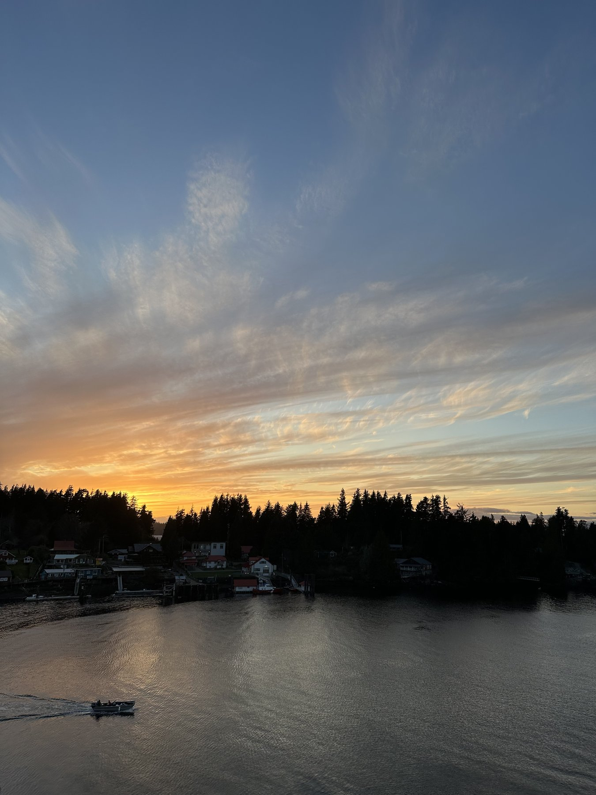
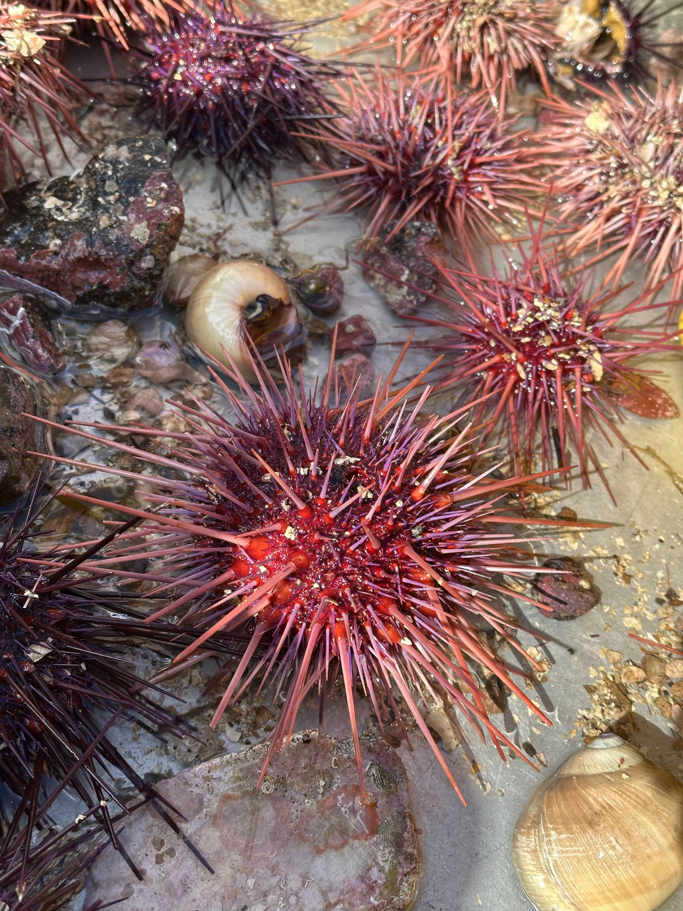
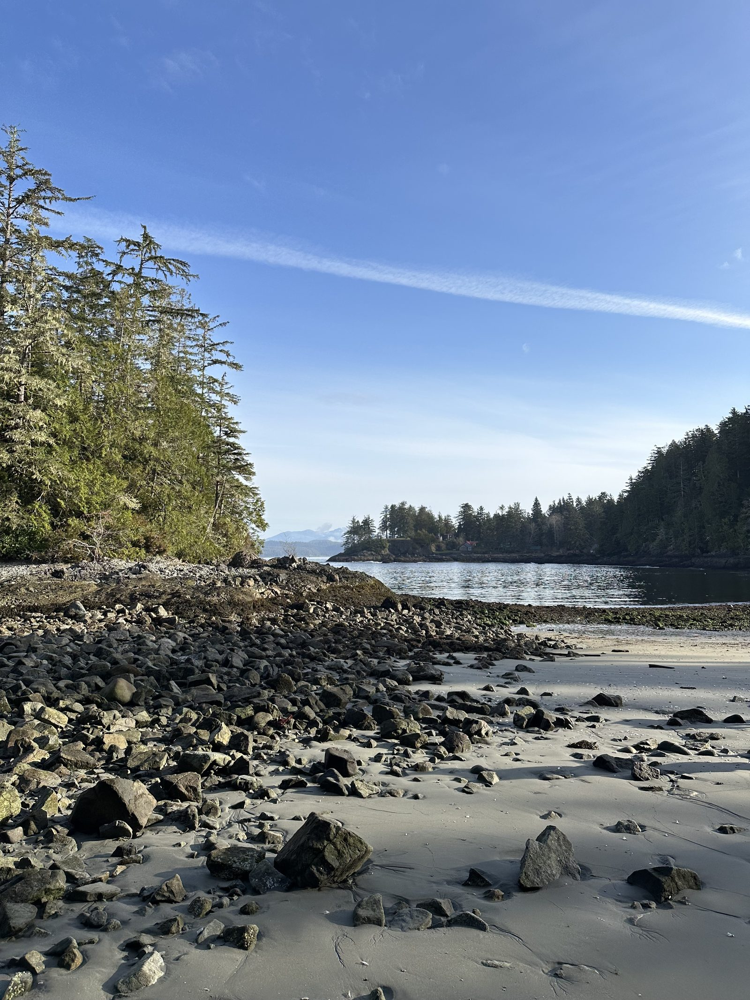
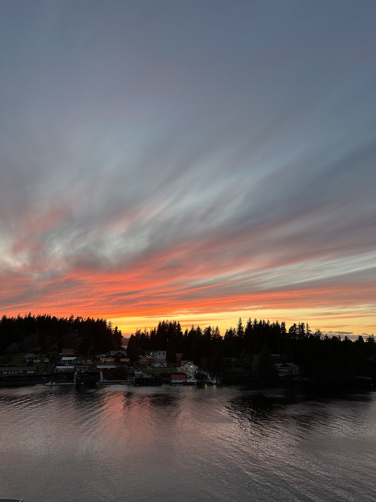
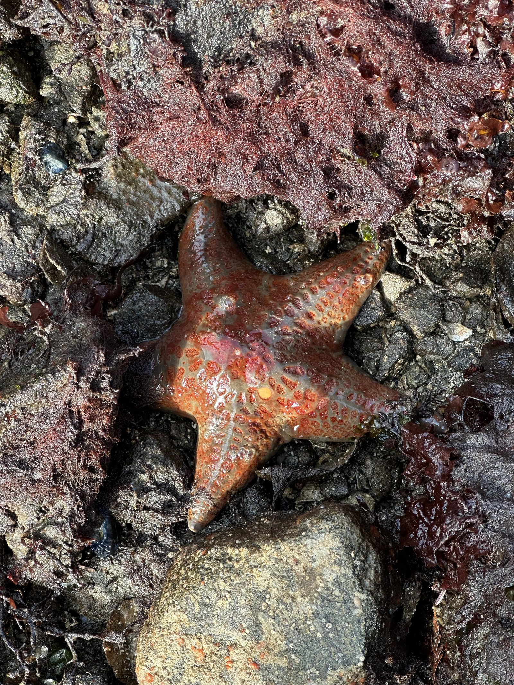
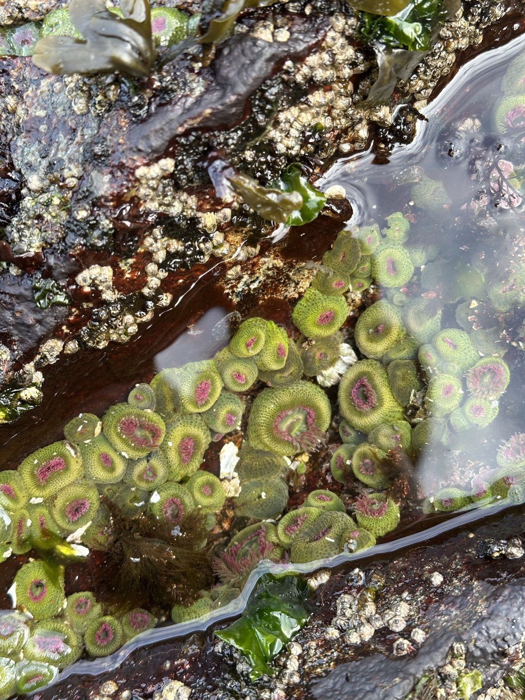
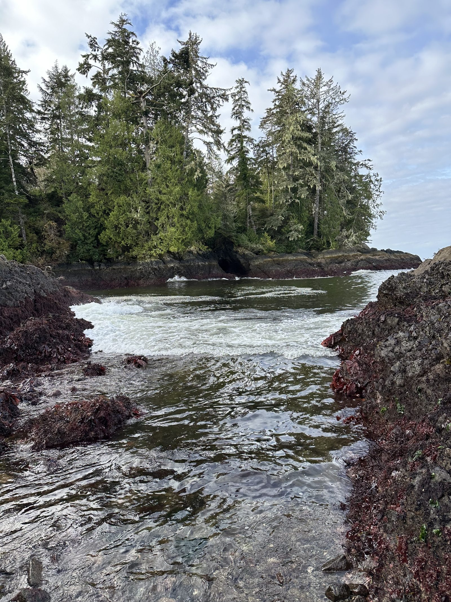
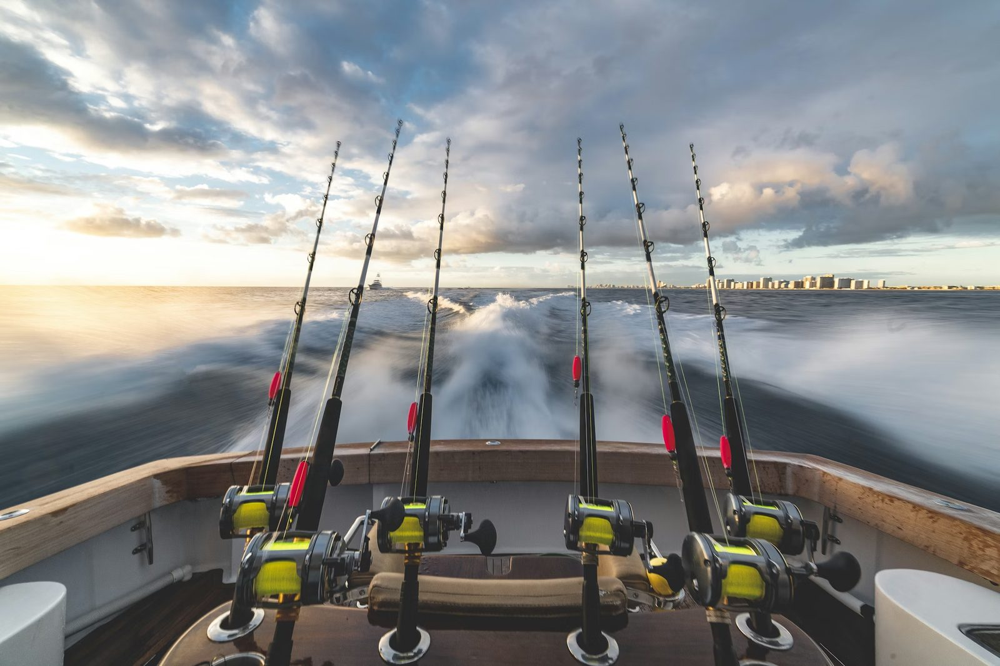
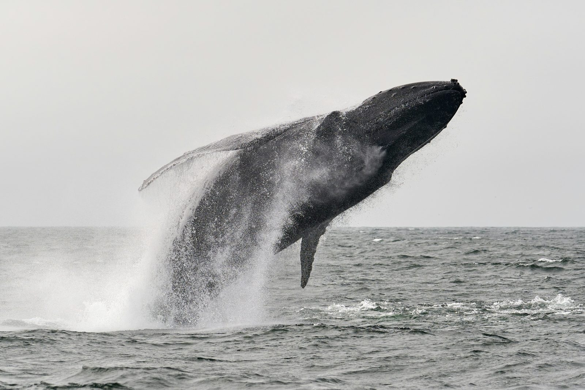
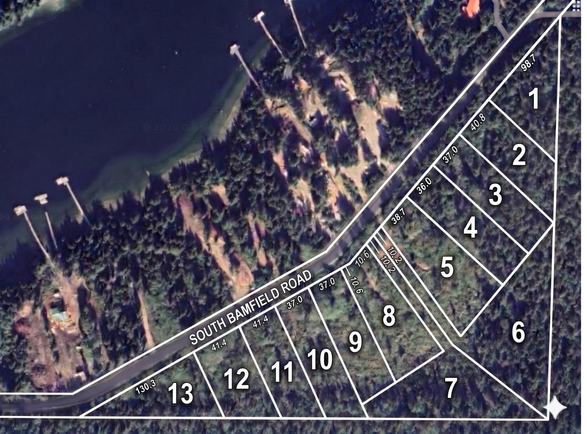

Long before this listing, Bamfield was already known to the people who matter — researchers, fishermen, hikers, and a small group of locals who built lives at the entrance to Barkley Sound. The land has not been priced for outsiders. It has been priced for people who understand what it is.
The northern terminus of one of Canada's most iconic multi-day hikes — Pacific Rim National Park Reserve — begins minutes from your door.
Chinook salmon, halibut, and lingcod in the rich waters of Barkley Sound. Charter operators run from the village marina year-round.
Bamfield is home to one of the leading ocean research institutions in the country — anchoring the community with year-round scientific presence.
Kayaking, diving, surfing, and whale watching from a village you can cross on foot. Eagles overhead, old-growth in the back lot, ocean air every morning.
Comparable acreage on the Sunshine Coast, the Gulf Islands, or Tofino sells for multiples of these prices. Bamfield's value has not yet caught up to its setting.
This is a working coastal village — marina, shops, school, seasonal services. Tight-knit, lived-in, and protective of what makes the place rare.
Bamfield's draw is what surrounds it. Within a short drive, walk, or boat ride: empty Pacific beaches, world-class fishing, an island archipelago that draws kayakers from around the world, and a small village of charters, resorts, and restaurants.
A 1.2-kilometre crescent of fine sand facing the open Pacific, on Huu-ay-aht First Nation territory. The northern terminus of the West Coast Trail and one of the most striking beaches on Vancouver Island.
A short water-taxi ride to West Bamfield, then a 20-minute walk through second-growth forest from the West Government Dock. Dramatic sandstone sea stacks, tide pools, and a blowhole. Often empty. Locally beloved.
Two of the wildest beaches on the south island, reached by rugged trail through coastal rainforest. Rarely visited, frequently spectacular. The Tapaltos route also leads to Cape Beale Lighthouse.
Over a hundred islands scattered across Barkley Sound — a marine kayaker's mecca, designated as part of Pacific Rim National Park Reserve. Sea lions, orcas, eagles, and uninhabited beaches.
A historic 1940s wooden boardwalk along West Bamfield's waterfront, connecting homes, docks, and the West Government Dock. Reached by a five-minute water taxi from East Bamfield.
One of Canada's leading ocean research stations, anchoring the community with year-round scientific presence and seasonal public tours of the labs and aquarium.
Bamfield is reached by paved and well-maintained gravel road from Port Alberni, by water taxi across the Sound, or by air. The drive is part of the appeal — old-growth canopy, mountain switchbacks, and a steady release from the pace of the mainland.
From Vancouver, plan a day. From Victoria, half a day. From Seattle, a long but cinematic weekend trip.



"There are sunsets in Bamfield
that don't repeat anywhere else
on the coast."






All thirteen parcels are titled, fee-simple, and registered under Plan EPP141779. Each is zoned RA1 / RA2 for single-family residential use, ranging from one to two acres. Available individually.

| Lot | Area | Acres | Asking |
|---|---|---|---|
| 01 | 4,050 m² | 1.001 acres | $428,000 |
| 02 | 4,050 m² | 1.001 acres | $428,000 |
| 03 | 4,256 m² | 1.052 acres | $476,000 |
| 04 | 4,275 m² | 1.056 acres | $487,000 |
| 05 | 5,575 m² | 1.378 acres | $564,000 |
| 06 | 7,951 m² | 1.965 acres | $564,000 |
| 07 | 6,485 m² | 1.602 acres | $564,000 |
| 08 | 4,930 m² | 1.218 acres | $564,000 |
| 09 | 4,155 m² | 1.027 acres | $476,000 |
| 10 | 4,310 m² | 1.065 acres | $497,000 |
| 11 | 4,050 m² | 1.001 acres | $428,000 |
| 12 | 4,050 m² | 1.001 acres | $428,000 |
| 13 | 4,050 m² | 1.001 acres | $428,000 |
The Sunshine Coast has been priced for outsiders for two decades. The Gulf Islands, longer than that. Tofino is now the most expensive small town on the Pacific. Bamfield is the last meaningful coastal community on Vancouver Island where titled acreage still trades at a fraction of those numbers.
That window is finite. The road is being upgraded. The Marine Sciences Centre is expanding. National park traffic into the trailhead grows every season. Land that is rare, titled, and priced like this does not stay this way.
Pricing, full title documents, covenant analysis, and viewing arrangements available to qualified purchasers on request.
Request Information Package dee.yvette@gmail.com